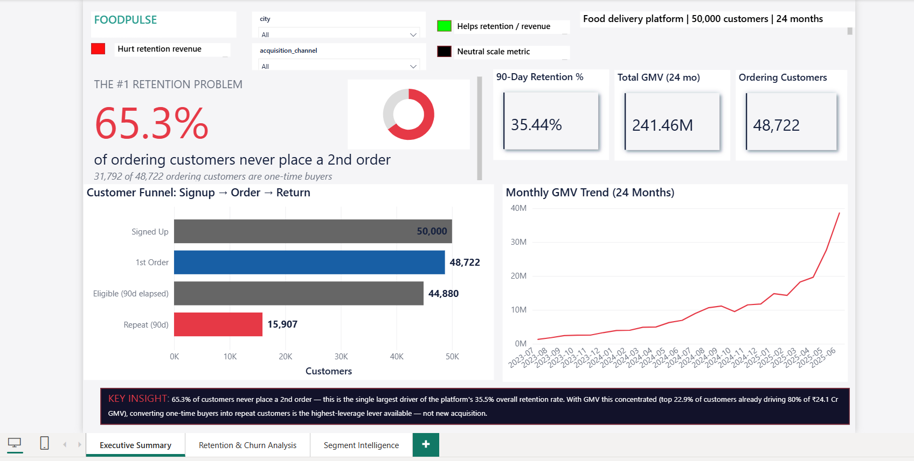
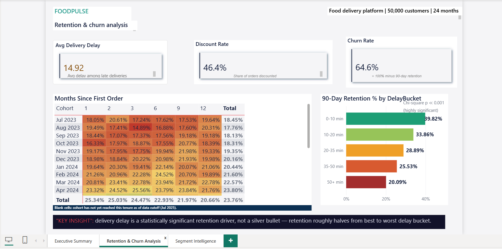
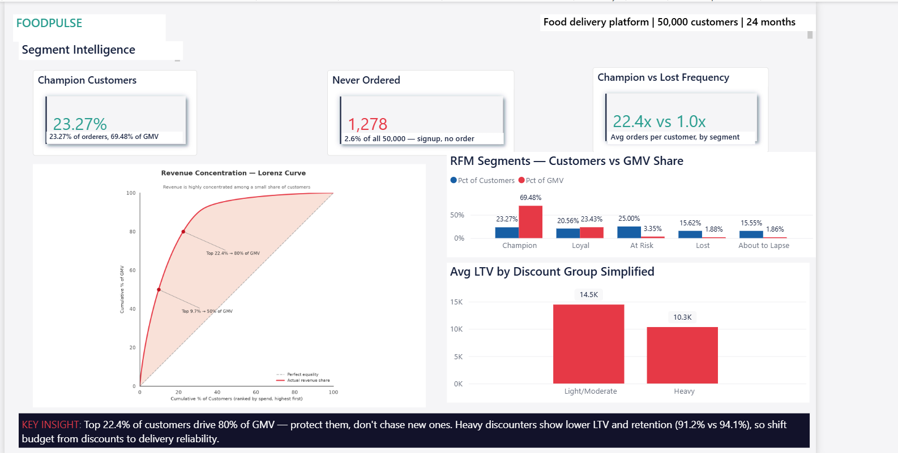

Page 1 — Live Recomputation (interactive)
Verify against source: these numbers are computed independently, client-side, in JavaScript
from
By design: GMV and Ordering Customers reflect platform totals and are not filtered by city/channel in the current dashboard version — only Retention % is segment-specific, matching the real
data/processed/customer_facts_dashboard.csv — the same underlying per-customer
data (and the same right-censoring / GMV filtering logic) already validated against the Power BI
.pbix and dashboard/build_dashboard.py elsewhere in this repository. They
are expected to match the live Power BI dashboard to within the same ~0.03 percentage point
tolerance already documented in the README, not necessarily bit-for-bit — spot-checked against the
actual .pbix across multiple city/channel combinations.
By design: GMV and Ordering Customers reflect platform totals and are not filtered by city/channel in the current dashboard version — only Retention % is segment-specific, matching the real
.pbix's slicer behavior exactly.
Loading customer_facts_dashboard.csv (50,000 rows)…

